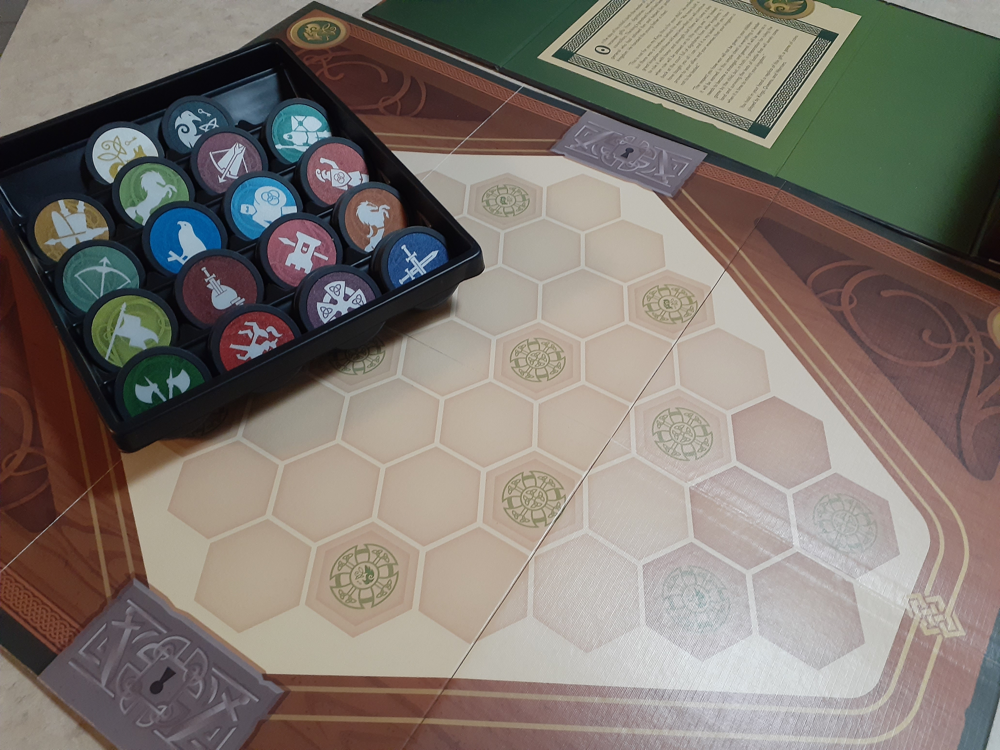

Competitive Games
Need a game for a small group that is easy to pick up? Here are some that we would highly recommend, being easy to learn, yet surprisingly replayable. If this kind of game appeals to you, check out our recommendations here!
Pixel Tactics
Pixel tactics is a interesting game that brings the fantasy battlefield combat to the table. In this two-player game, each goes head to head with decks brimming with fiends, wizards, gunslinger, and more! But each card can be used in so many ways! You could put the wizard as on the front-line to use protective spells, on the rear to launch powerful spells from behind, or even lead you team with that same wizard. No matter how many times you play, there is always something new to try that will surprise you.
War Chest
For those who are familiar with Chess, this game may have a familiar ring. In this tabletop battlefield game, each player randomly picks 4 of 16 available troop-types based on medieval soldiers. Each soldier has its own special ability, and players must strategically maneuver their army across the map to capture designated control points before their opponent does. But they must be careful, as once a troop is defeated, it is gone for the remainder of the game. Additionally, actions are determined using a drawbag filled with tokens. A deeply satisfying game with plenty of replayability.
